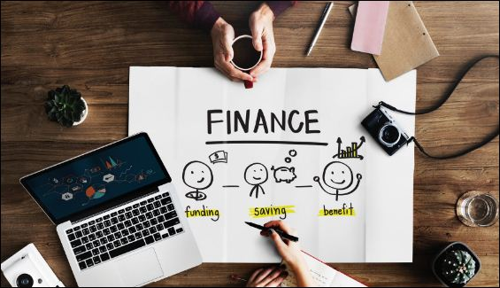

Top 10 Trending Blog Niches in (2023) to Make Money Online
Making money online through blogs and articles has become one of the most effective & efficient ways of
bringing in cash
with the help of the web technologies and search engines like Google.com . In order to start blogging &
persuing it as a
career , you need to know various ideas and knowledge about the structures, categories of your website.
Its good to be prepared initially to understand the Niche that you are gonna work onto in the future.
Luckily, there's a lot of blog niches that you can investigate and take insights into . When you find a
speciality that meets your inclinations and supports your range of abilities, you can begin conveying
top-notch articles and adapting your substance. So, with the sense of providing knowledgable
informations about
blog niches,we are here to present you 'Top 10 Best Trending Niches For Blogging in 2023'. I hope this
will help
you figure out your potential Niche.
What Blog Niches Generally Are ?
Generally, Blog Niches are the major running themes of your blog or the topic around which all of your content will be centred focus. In simple words, A website which has a Niche related to 'Blogging & Online Income' will post the posts related to that particular category which comes under 'Blogging & Online Income'only.
Top 10 Best Trending Blog Niches Ideas in 2023
The topics mentioned below have their own features and significances. One can use any of these categories to begin with as per his/her interest in it. To become a successful blogger,you need to figure out your intesest & invest your efforts wholeheartedly in this field.
- Digital Marketing
- Gadgets and Technology
- Tech news
- Tech Gadgets
- Software-based blogging tools
- Tips and tricks for technology users
- Making Money with Tech
- Mobile and Laptop technology blog topics
- Health and Fitness Blogs
- Travel Blogging
- Financial Planning and Investment 
- Food & Ingredients Products
- Pet Products
- Home Decoration
- Kitchen Utensils
- Religious Beliefs/Sprituality Blogs
Digital Marketing encompasses all marketing efforts that promote your product or brand using
electronic devices or the internet.
It leverages online marketing tactics like search marketing, email marketing, social media
marketing, and mobile marketing to
connect with current and prospective customers.
SEO helps you in the process of optimizing content, technical set-up, and reach of your website so
that your
pages appear at the top of a search engine result for specific keywords. The ultimate goal is to
attract visitors to your website when they search for products or services related to your business.
Think about the last important purchase you made. Before buying, you probably would have searched
the internet
to learn about the product you wanted and what your best options were. And your ultimate buying
decision
would have been based on the customer reviews, features, and pricing you researched.
If you are willing to run a technology or gadget blog site, then you must be aware that covering the
right technology blog
content is highly critical if you wish to establish your footing in such competitive technology
industry.
You need to understand the demands in the market and figure out the necessary topics related to
Gadgets and Technologies in
your blog posts. Some of the best and trending keywords in this Niche are :
Since most of the people are health conscious these days, online fitness programs and
such blog niches are becoming very popular day by day .About 7 out of 10 people,love knowing
informations
online rather than from a health assistant personnaly. Starting your own fitness blog is one way for
health professionals to benefit from this
expanding trend and a new target market. Health and Fitness Blog can help people know the best
possible healthy
practises that can be done at home.
There are various options for you to produce a wide variety of material, including exercise videos,
fitness classes,
one-on-one training sessions, and lessons in appropriate form. This speciality presents a lot of
chances to bring in cash. You can work with brands to advance items, like wellness hardware and
apparel. You could offer an internet-based wellbeing system or offer membership to your exercise
recordings as well.
Travel blogs are in high demand these days. These types of blogging are simply the articles where the
writer has his/her entire focus is on the world of places and travel. As We’re all fond of
travelling,exploring
beautiful places arounf the eorld. People love searching these terms on the internet as they want to
visit some places around the world in the vacations. The travel blogs share stories of travelers
which really are
inspiring, offer great advice, share in depth travel tips, to help you explore new places.
So, If you think travelling is a fun activity & interested in creating such contents in your
blogging site,
it is a great idea to earn money and showing people the unexplored places
throught your country or place. You yourself don't really need to travel for this but can take help
from other
travellers experience and the pros and cons of the particular places to include hem in your blogs.
We are clearly known about this fact that people are constantly seeking better ways to manage their
finances.
In fact, As per recent Google datas, searches for information on financial management
have increased
by more than 70% over the previous two years. This is all because of digitalization and
consciousness of
people on sharemarket and investments. The same data reveals that searches for investment and
stock-related apps have significantly increased. Therefore, the blogging area of personal finance
might be rather rewarding.
You can start creating some tips about how to manage the finance & help people to invest their
savings in
stock markets and give a clear vision related to such various stuffs in your blog posts. Everyone in
this
world wants to invest his/her money in productive fields. This can be a better idea to start a
finalcial rlated
site as its demand is high and is increasing in great pace as well.
People love creating tasty and astonishing foods in parties,functions,programs. For that, they need
to
know the recepies to cook such foods. Eventually,they try to search the queries on the search
engines like
Google. Food & Ingredients Blogging Niche can be an interesting way to help people know the cooking
practises.
Food is one of the most lucrative blog themes and an evergreen subject. Additionally, it offers a
variety of
sub-niches to investigate, from quick and simple dishes to details on certain diets.
The food market is already crowded with huge number of moms and cooking junkies.
Your Blogs can offer both diets foods and their related products to the viewers .
Simply use your imagination a little bit,
especially if this is your first blog, by providing fresh recipes or adding your own spin to
well-known foods.
One of the top blog niches in today’s world is Pet and Pet Product blogging. People who own pets such
as dogs, cats, goats, rabbits, monkeys, fishes etc are continuously in search of pet foods, clothes,
skin care, hair care items throughout the year. If you’re new to blogging and are in search of blog
niches that yields you a great sum of money this can be really good option to go with.
People love their pets and are ready to invest alot for their loved ones. Eventually,they search
their needs
on google and if they find all the necessay stuffs on a single blog post,then it not only makes them
happy but
also generate a huge income to your business as well. You can get sponsorships and generate some
more income.

Who doesn't want to decorate their home ? Who doesn't want their homes to look beautiful ?
With these sense, people surf search engines to find the best possible utensils for home
decorations.
In today's online world, Everyone is seeking their products on the web. This can help a blogger to
get some clicks on his/her sites. This can boost your sites perfomance in the Google search. You can
collab with such home decorations stores and place their advertisements in your blog posts.
Everyone search for necessary kitchen related utensils in the web. There are various such sites that offer kitchen utensils to buy from their stores. You just need to address the necessary marketing ways to sell the products in your posts. Google Adsense as well your own collaboration with such stores can help you gain income.
Though everyone today believes in Science,but they still believe in spiritualism. Even
in this world,the search terms related to religious beliefs is hign. People search the
keywords based on spiritual beliefs. One can create blog posts related to these categories and
help people understand their queries .
The hindus still believe in their holy books and the lessons taught by it as same goes to other
religios as well. One can sell the products related to spiritual things on the web and grow their
business in this niche as well.
FAQ'S
- How to create a FREE Website with FREE Domain & Hosting ?
- What is the Minimum Website Pages For ADSENSE Approval ?
- How to Earn Money Online in India ?
- How to Earn Money Online in Nepal ?
- Can I click my own ads in my website ?
- What is the best way to earn money online for students ?
- Can I click my AD's from others phones and earn more money ?